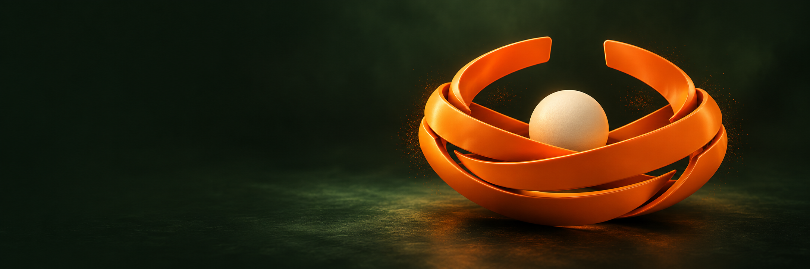

The Nest, in motion.
A production brief for turning the chosen cover into a restrained 3D scene. The PNG is an art direction plate; geometry, scene files and animation are future production work.

Geometry & identity
Use three independent broad ribbon meshes to build a low, open-top cradle. The flat symbol’s five visible ribbon segments represent interleaved portions of these bands. Keep staggered ends, smooth broad faces, and negative gaps. Preserve the bowl silhouette; do not turn the bands into closed planetary orbit rings. The central seed is a separate sphere. Use the SVG mark as a front-view silhouette check, rather than extruding every 2D path literally.
Name scene objects nest_ribbon_A, nest_ribbon_B, nest_ribbon_C, nest_seed, nest_ground, camera_cover, key_warm, rim_signal. Keep pivots near the cradle center and transforms applied before animation. Retain editable curve/mesh sources.
Material & lighting targets
| Element | Starting direction |
|---|---|
| Ribbon surface | Orange #FF5500, satin ceramic / coated metal. Start roughness 0.28–0.38 and low metallic weight; tune under final lighting to avoid yellow/gold dominance. |
| Seed | Warm cream #EEF0E2, matte, roughness ~0.6. An abstract spherical seed, without an egg shell or literal biological texture. |
| Environment | Forest #0E150D and moss #151F14. Quiet grounding plane, a soft shadow, restrained haze. Avoid crushed detail. |
| Light | Large warm key from upper left, narrow orange rim and a subtle green bounce. Soft highlights describe broad surfaces; no flashing emissions. |
| Texture / dither | Use sparse stipple as a separate optional compositor layer at the sculpture edge. Keep typography and product screens clean. |
Camera & framing
Start with a 55–70mm perspective camera, gently elevated in a three-quarter view. Nest occupies the right 55% of a 3:1 cover; keep its full silhouette inside the central 82% of the height. Reserve the left 40% as a clean dark typography field. Avoid extreme depth of field, camera roll or fast orbiting movement. Keep typography separate from 3D geometry.
Five-second motion study
| Time | Movement |
|---|---|
| 0.0–1.5s | Ribbons move from small positional offsets into the woven cradle. Limit rotations to roughly 8–12 degrees. Ease gently into the final crossing order. |
| 1.5–3.0s | Seed settles with a small vertical translation. No squash, bounce, collision spectacle or visual implication of guaranteed growth. |
| 3.0–5.0s | Camera arc ≤8 degrees, then hold the chosen composition. Favor a one-time reveal. An optional ambient loop should begin and end in the same pose. |
| Reduced motion | Show the final still. No autoplay, pulse, shimmer or parallax. If animation plays, provide an accessible pause control. |
Delivery checklist
- Editable Blender/Cinema 4D scene with separate meshes, materials, lights and camera.
- Primary cover at 2400×800, plus a 3840×1280 master. Render at native resolution; the present PNG is 2172×724.
- Text-free beauty plate, typography overlay, transparent object pass, shadow pass, depth, normal, emission/dither and object IDs.
- 30fps image sequence master; MP4 H.264 and WebM for web use, with a matching still poster. Preserve a mezzanine master for later encoding.
- Mobile variant reframes the sculpture above or below copy. Do not crop the desktop plate blindly through the sphere.
- Flat logo remains one color. Keep the brand cover out of the working Research/Credit/Earn/Trade/Portfolio screens.
- Check a silent, paused and reduced-motion presentation before implementation.